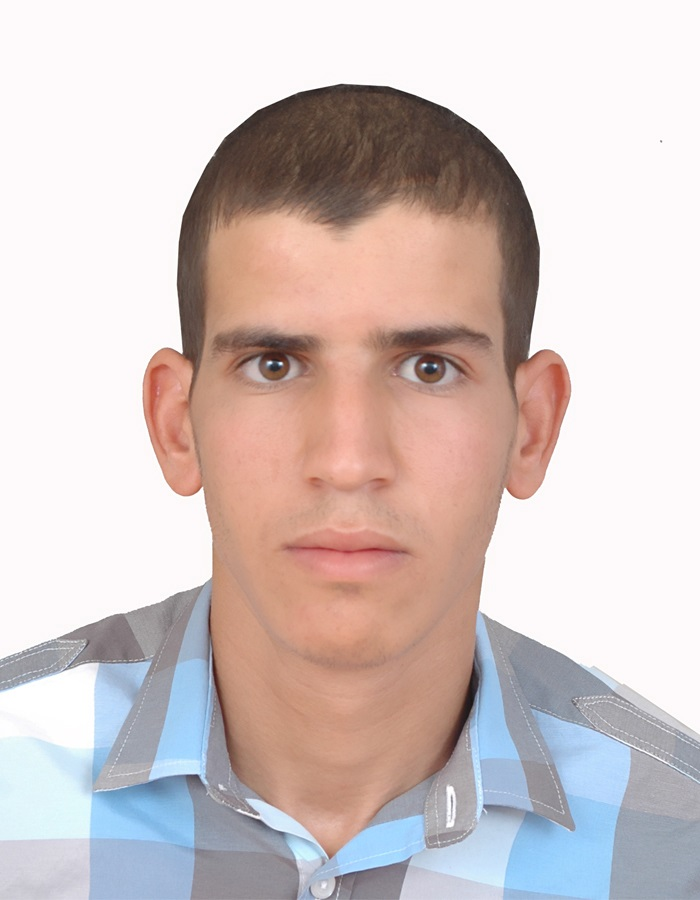

- Nom : BEN CHAMA
- PRENOM : JAWAD
- ADRESSE : Dr. Ourika Tansift, Agdz, PR. Zagoura
- TELEPHONE : : +212636567723
Etudient en master spécialisé sciences géomatique appliquées à la gestion des ressources naturelles et environnementales, FPT Taroudant
Mes expériences
- De 2016 à 2020: Actuellement Géologue d’Exploration et Administrateur chez la société AGAMINE à Agadir
- Cartographies géologiques et structural.
- Echantillonnages pour les analyses géochimiques.
- Réalisation des coupes géologique transversal et longitudinal.
- Calcule des Ressources et Estimation des Réserves.
- Elaboration des rapports géologiques et des Mission avec des professeurs universitaire..
- évaluation des potentialités minières des permis miniers.
- Participation aux études géophysiques (Sondages électrique, VLF etc).
- Suivie administratif, élaboration et mise à jour de base de donné des permis de recherche miniers (Réattribution, Renouvellement, et Transformation en licence d’exploitation etc)
- De 2014 à 2015: Stage au sein de la société minière d’Akka Gold Mining/Managem «Géologue d’Exploration dans le Projet d’Exploration de Cuivre de la future mine de Tizert, région d’Igherm, Anti Atlas Occidental» (9 mois)
- Délimitation spatiale des formations et structures géologiques par système GPS..
- Echantillonnages roches.
- Elaboration et mise à jour des bases de données géologiques.
- De 2013 à 2014:Stage au sein de la société minière du Bou-Gaffer/Managem (1mois)
- Cartographie géologique à l’échelle détailler 1/1000 Zone de Garat en Nous Bleida .
- Stage de PFE «Initiation à la Cartographie Géologique, région du Tahannaout Douar Sour et Moulay Brahim».
Mes compétences
- Réalisation des cartes géologiques, les Coupes géologiques et les plans des travaux réalisés et à réaliser à une échelle approprié à l’aide du logiciel: MapInfo Discover, Globale Mapper, MapSource, Google Earth, OruxMaps, Surfer…
- Office Microsoft
- ArcGis,Google Earth
- Applications de dessin assiste par ordinateur, dessin de bâtiment et réalisation des plans à une échelle appropriée à l’aide du logiciel AUTOCAD.
Mes formations
- 2014-2015: :Licence d’Etudes Fondamentales, filière Science de la Terre et de l’Univers, parcours Bassins sédimentaire et Géo-ressources à la faculté des Sciences Semlalia, Marrakech.
- 2013-2014: : Diplôme d’Etudes Universitaires Générales (DEUG), filière Sciences de la Terre et de l’Univers à la faculté des Sciences Semlalia, Marrakech
- 2010-2011: : Baccalauréat en sciences de la Vie et de la Terre au lycée Idriss I Agdz.